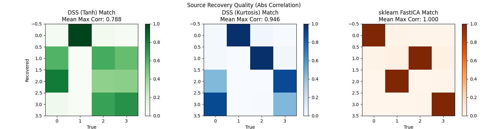
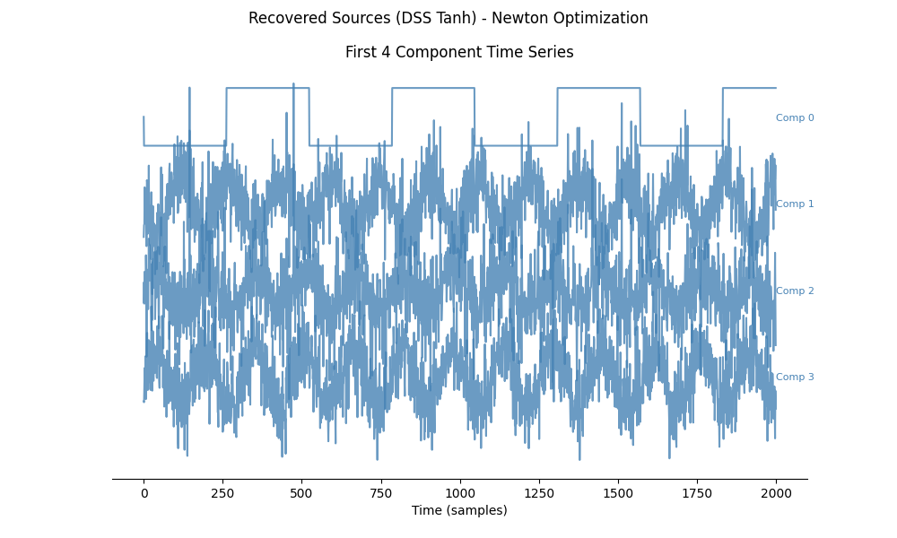
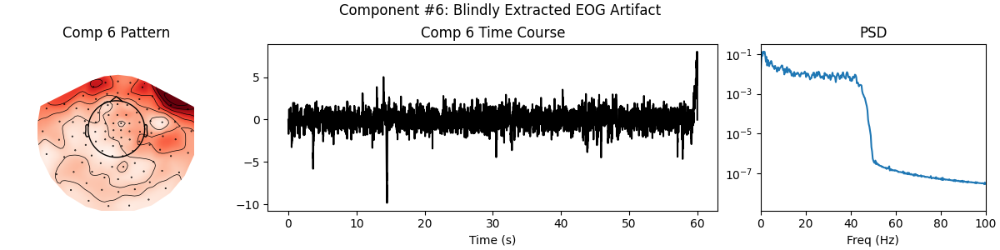
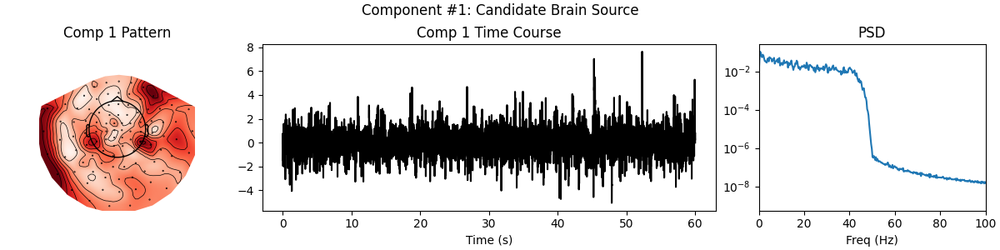
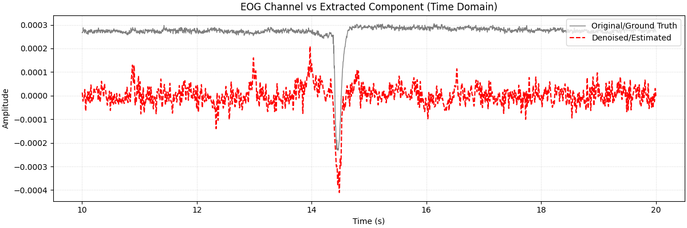

Note
Go to the end to download the full example code.
08. Blind Source Separation & ICA Equivalence.#
This example demonstrates how Nonlinear DSS can perform Blind Source Separation (BSS), effectively recovering independent sources from mixed signals. It explicitly shows the equivalence between DSS with specific nonlinearities and Independent Component Analysis (ICA).
We cover: 1. Synthetic BSS: Separating mixed Super-Gaussian sources (speech/bursts) and Sub-Gaussian sources. 2. ICA Equivalence: Comparing DSS (TanhMaskDenoiser, KurtosisDenoiser) against sklearn.decomposition.FastICA. 3. Real MEG Data: Performing blind decomposition of the MNE Sample dataset to find artifacts (EOG/ECG) and brain sources.
- Authors: Sina Esmaeili (sina.esmaeili@umontreal.ca)
Hamza Abdelhedi (hamza.abdelhedi@umontreal.ca)
import matplotlib.pyplot as plt
import mne
import numpy as np
from mne.datasets import sample
from scipy import stats
from mne_denoise.dss import IterativeDSS, KurtosisDenoiser, TanhMaskDenoiser, beta_tanh
from mne_denoise.viz import (
plot_component_summary,
plot_component_time_series,
plot_overlay_comparison,
)
print(__doc__)
Part 1: Synthetic Blind Source Separation#
We generate synthetic sources with different statistical properties (Super-Gaussian, Sub-Gaussian) and mix them linearly. We then attempt to recover them using DSS and FastICA.
print("\n--- 1. Creating Synthetic Mixed Data ---")
n_samples = 2000
time = np.linspace(0, 8, n_samples)
# 1. Super-Gaussian (Laplace) - "Sparse" / "Bursty"
s1 = stats.laplace.rvs(size=n_samples)
s1 /= s1.std()
# 2. Super-Gaussian (Square Wave) - High Kurtosis
s2 = np.sign(np.sin(3 * time))
s2 /= s2.std()
# 3. Sub-Gaussian (Sinusoid) - Low Kurtosis
s3 = np.sin(10 * time)
s3 /= s3.std()
# 4. Gaussian Noise
s4 = np.random.randn(n_samples)
# Stack true sources
S_true = np.c_[s1, s2, s3, s4].T
n_sources = S_true.shape[0]
# Mix sources
np.random.seed(42)
A = np.random.randn(n_sources, n_sources) # Mixing matrix
X = np.dot(A, S_true) # Mixed signals
# Visualize
fig, axes = plt.subplots(3, 1, figsize=(10, 8), sharex=True)
axes[0].plot(time, S_true.T + np.arange(n_sources) * 5)
axes[0].set_title("True Sources")
axes[0].set_yticks(np.arange(n_sources) * 5)
axes[0].set_yticklabels([f"S{i}" for i in range(n_sources)])
axes[1].plot(time, X.T + np.arange(n_sources) * 5)
axes[1].set_title("Mixed Signals (Input)")
axes[1].set_yticks(np.arange(n_sources) * 5)
plt.tight_layout()
plt.show(block=False)
--- 1. Creating Synthetic Mixed Data ---
Run DSS with Tanh Nonlinearity (Robust ICA)#
The TanhMaskDenoiser implements the tanh nonlinearity, which is robust to outliers.
Convergence Comparison: We demonstrate the speedup of the “Newton step” (beta=beta_tanh) vs standard gradient ascent (beta=None). The Newton step is what makes FastICA fast (quadratic convergence).
print("\nRunning DSS with Tanh Nonlinearity (Robust)...")
# 1. Gradient Ascent (Slow)
print(" Fitting with Gradient Ascent (beta=None)...")
dss_grad = IterativeDSS(
denoiser=TanhMaskDenoiser(),
method="deflation",
n_components=n_sources,
beta=None, # Gradient ascent
random_state=42,
verbose=False,
)
dss_grad.fit(X)
# 2. Newton Method (Fast - FastICA style)
print(" Fitting with Newton Method (beta=beta_tanh)...")
dss_tanh = IterativeDSS(
denoiser=TanhMaskDenoiser(),
method="deflation",
n_components=n_sources,
beta=beta_tanh, # Newton step
random_state=42,
verbose=False,
)
dss_tanh.fit(X)
S_dss_tanh = dss_tanh.transform(X)
# Compare iterations
iters_grad = dss_grad.convergence_info_[:, 0].sum()
iters_newton = dss_tanh.convergence_info_[:, 0].sum()
print(f" Gradient Iterations: {iters_grad:.0f}")
print(
f" Newton Iterations: {iters_newton:.0f} (Speedup: {iters_grad / iters_newton:.1f}x)"
)
Running DSS with Tanh Nonlinearity (Robust)...
Fitting with Gradient Ascent (beta=None)...
Fitting with Newton Method (beta=beta_tanh)...
Gradient Iterations: 65
Newton Iterations: 23 (Speedup: 2.8x)
Run DSS with Kurtosis Nonlinearity (Standard FastICA)#
KurtosisDenoiser with nonlinearity=’cube’ maximizes kurtosis ($s^3$), which is the classic definition of FastICA.
print("Running DSS with Kurtosis Nonlinearity (FastICA standard)...")
dss_kurt = IterativeDSS(
denoiser=KurtosisDenoiser(nonlinearity="cube"),
method="deflation",
n_components=n_sources,
beta=-3.0, # Newton step for kurtosis
random_state=42,
verbose=False,
)
dss_kurt.fit(X)
S_dss_kurt = dss_kurt.transform(X)
Running DSS with Kurtosis Nonlinearity (FastICA standard)...
Comparison with sklearn FastICA#
We run sklearn.decomposition.FastICA to serve as a ground truth benchmark.
from sklearn.decomposition import FastICA
print("Running sklearn FastICA (Benchmark)...")
ica = FastICA(
n_components=n_sources, algorithm="deflation", fun="logcosh", random_state=42
)
S_fastica = ica.fit_transform(X.T).T
Running sklearn FastICA (Benchmark)...
Evaluate Performance (Correlation with True Sources)#
We compute the absolute correlation matrix between recovered components and true sources. A perfect recovery would have one 1.0 per row/column (permutation matrix).
def match_sources(S_est, S_true):
"""Calculate best correlation match for each source."""
n_est = S_est.shape[0]
n_true = S_true.shape[0]
corr = np.zeros((n_est, n_true))
for i in range(n_est):
for j in range(n_true):
corr[i, j] = np.abs(np.corrcoef(S_est[i], S_true[j])[0, 1])
return corr
print("\n--- Evaluation ---")
corr_tanh = match_sources(S_dss_tanh, S_true)
corr_kurt = match_sources(S_dss_kurt, S_true)
fig, axes = plt.subplots(1, 3, figsize=(15, 4))
im0 = axes[0].imshow(corr_tanh, vmin=0, vmax=1, cmap="Greens")
axes[0].set_title(
f"DSS (Tanh) Match\nMean Max Corr: {np.mean(np.max(corr_tanh, axis=1)):.3f}"
)
axes[0].set_ylabel("Recovered")
axes[0].set_xlabel("True")
plt.colorbar(im0, ax=axes[0])
im1 = axes[1].imshow(corr_kurt, vmin=0, vmax=1, cmap="Blues")
axes[1].set_title(
f"DSS (Kurtosis) Match\nMean Max Corr: {np.mean(np.max(corr_kurt, axis=1)):.3f}"
)
axes[1].set_xlabel("True")
plt.colorbar(im1, ax=axes[1])
corr_ica = match_sources(S_fastica, S_true)
im2 = axes[2].imshow(corr_ica, vmin=0, vmax=1, cmap="Oranges")
axes[2].set_title(
f"sklearn FastICA Match\nMean Max Corr: {np.mean(np.max(corr_ica, axis=1)):.3f}"
)
axes[2].set_xlabel("True")
plt.colorbar(im2, ax=axes[2])
plt.suptitle("Source Recovery Quality (Abs Correlation)")
plt.tight_layout()
plt.show(block=False)
# Plot recovered time series using viz module
print("Visualizing Recovered Sources (Stacked)...")
# We treat the sources as "components" of the estimator
plot_component_time_series(dss_tanh, data=X, show=False)
plt.gcf().suptitle("Recovered Sources (DSS Tanh) - Newton Optimization")
plt.show(block=False)
- 
- 
--- Evaluation ---
Visualizing Recovered Sources (Stacked)...
Part 2: Blind Separation of Real MEG Data#
We apply nonlinear DSS to the MNE sample dataset (MEG channels) to blindly extract artifacts (EOG, ECG) and brain sources. This is similar to running mne.preprocessing.ICA.
print("\n--- 2. Real MEG Data (Blind Separation) ---")
data_path = sample.data_path()
raw_fname = data_path / "MEG" / "sample" / "sample_audvis_raw.fif"
raw = mne.io.read_raw_fif(
raw_fname, verbose=False
) # list_url=[] prevents download print spam usually
raw.crop(0, 60).pick_types(meg=True, eeg=False, eog=True, stim=False).load_data()
# Filter to remove drifts and high freq noise
raw.filter(1, 40, verbose=False)
# Prepare MEG-only data for BSS
# We want to find artifacts *in the MEG channels*, ensuring we don't just pick up the EOG channel itself.
raw_meg = raw.copy().pick_types(meg=True, eeg=False, eog=False, stim=False)
print(f"Data shape (MEG only): {raw_meg.get_data().shape}")
# Fit DSS-Tanh (Blind Decomposition)
print("Fitting Blind DSS (this may take a moment)...")
n_components = 15
dss_meg = IterativeDSS(
denoiser=TanhMaskDenoiser(),
method="deflation",
n_components=n_components,
beta=beta_tanh,
verbose=True,
)
dss_meg.fit(raw_meg)
# Identify Artifacts by correlation with EOG channel
# We use the separate EOG channel to validate which extracted source corresponds to blinks.
eog_ch = raw.get_data(picks="eog")[0]
sources = dss_meg.transform(raw_meg)
corrs = [np.abs(np.corrcoef(s, eog_ch)[0, 1]) for s in sources]
blink_idx = np.argmax(corrs)
print(f"\nMost likely EOG component: #{blink_idx} (Corr: {corrs[blink_idx]:.3f})")
# Visualize the Blink Component
print("Visualizing Blink Component...")
plot_component_summary(dss_meg, data=raw_meg, n_components=[blink_idx], show=False)
plt.gcf().suptitle(f"Component #{blink_idx}: Blindly Extracted EOG Artifact")
plt.show(block=False)
# Visualize a Brain Component (candidate)
# We look for a component that is NOT the blink argmax
candidate_indices = [i for i in range(n_components) if i != blink_idx]
brain_idx = candidate_indices[1] # Pick arbitrary one, e.g. 2nd candidate
print(f"Visualizing Candidate Brain Component #{brain_idx}...")
plot_component_summary(dss_meg, data=raw_meg, n_components=[brain_idx], show=False)
plt.gcf().suptitle(f"Component #{brain_idx}: Candidate Brain Source")
plt.show(block=False)
# Overlay comparison for EOG
# Show how the extracted component matches the EOG channel
eog_raw = mne.io.RawArray(
eog_ch[None, :], mne.create_info(["EOG"], raw.info["sfreq"], "eog")
)
comp_raw = mne.io.RawArray(
sources[blink_idx : blink_idx + 1], mne.create_info(1, raw.info["sfreq"], "misc")
)
plot_overlay_comparison(
eog_raw,
comp_raw,
start=10,
stop=20,
title="EOG Channel vs Extracted Component (Time Domain)",
show=False,
)
plt.show(block=False)
print("\nBlind Source Separation complete!")
plt.show()
- 
- 
- 
--- 2. Real MEG Data (Blind Separation) ---
Using default location ~/mne_data for sample...
Creating /home/runner/mne_data
Downloading file 'MNE-sample-data-processed.tar.gz' from 'https://osf.io/download/86qa2?version=6' to '/home/runner/mne_data'.
0%| | 0.00/1.65G [00:00<?, ?B/s]
0%| | 3.36M/1.65G [00:00<00:49, 33.6MB/s]
1%|▎ | 11.7M/1.65G [00:00<00:26, 62.9MB/s]
1%|▍ | 20.1M/1.65G [00:00<00:22, 72.6MB/s]
2%|▋ | 28.6M/1.65G [00:00<00:20, 77.3MB/s]
2%|▊ | 37.0M/1.65G [00:00<00:20, 79.8MB/s]
3%|█ | 45.4M/1.65G [00:00<00:19, 81.1MB/s]
3%|█▏ | 53.7M/1.65G [00:00<00:19, 81.9MB/s]
4%|█▍ | 62.1M/1.65G [00:00<00:19, 82.4MB/s]
4%|█▌ | 70.3M/1.65G [00:00<00:20, 79.1MB/s]
5%|█▊ | 78.7M/1.65G [00:01<00:19, 80.5MB/s]
5%|█▉ | 87.0M/1.65G [00:01<00:19, 81.4MB/s]
6%|██▏ | 95.5M/1.65G [00:01<00:18, 82.2MB/s]
6%|██▍ | 104M/1.65G [00:01<00:18, 82.8MB/s]
7%|██▌ | 112M/1.65G [00:01<00:18, 83.0MB/s]
7%|██▊ | 121M/1.65G [00:01<00:18, 83.2MB/s]
8%|██▉ | 129M/1.65G [00:01<00:18, 82.6MB/s]
8%|███▏ | 137M/1.65G [00:01<00:18, 82.3MB/s]
9%|███▎ | 146M/1.65G [00:01<00:18, 82.7MB/s]
9%|███▌ | 154M/1.65G [00:01<00:18, 83.1MB/s]
10%|███▋ | 162M/1.65G [00:02<00:17, 83.2MB/s]
10%|███▉ | 171M/1.65G [00:02<00:17, 83.5MB/s]
11%|████ | 179M/1.65G [00:02<00:17, 83.6MB/s]
11%|████▎ | 188M/1.65G [00:02<00:17, 83.6MB/s]
12%|████▌ | 196M/1.65G [00:02<00:17, 83.7MB/s]
12%|████▋ | 204M/1.65G [00:02<00:17, 83.5MB/s]
13%|████▉ | 213M/1.65G [00:02<00:17, 83.3MB/s]
13%|█████ | 221M/1.65G [00:02<00:17, 83.3MB/s]
14%|█████▎ | 229M/1.65G [00:02<00:17, 83.4MB/s]
14%|█████▍ | 238M/1.65G [00:02<00:16, 83.4MB/s]
15%|█████▋ | 246M/1.65G [00:03<00:16, 83.5MB/s]
15%|█████▊ | 254M/1.65G [00:03<00:16, 83.4MB/s]
16%|██████ | 263M/1.65G [00:03<00:16, 83.2MB/s]
16%|██████▏ | 271M/1.65G [00:03<00:16, 83.2MB/s]
17%|██████▍ | 279M/1.65G [00:03<00:16, 83.2MB/s]
17%|██████▌ | 288M/1.65G [00:03<00:16, 83.1MB/s]
18%|██████▊ | 296M/1.65G [00:03<00:16, 83.0MB/s]
18%|██████▉ | 304M/1.65G [00:03<00:16, 83.0MB/s]
19%|███████▏ | 313M/1.65G [00:03<00:16, 83.0MB/s]
19%|███████▍ | 321M/1.65G [00:03<00:16, 83.1MB/s]
20%|███████▌ | 329M/1.65G [00:04<00:15, 83.0MB/s]
20%|███████▊ | 338M/1.65G [00:04<00:15, 82.7MB/s]
21%|███████▉ | 346M/1.65G [00:04<00:15, 82.7MB/s]
21%|████████▏ | 354M/1.65G [00:04<00:15, 82.5MB/s]
22%|████████▎ | 362M/1.65G [00:04<00:15, 82.6MB/s]
22%|████████▌ | 371M/1.65G [00:04<00:15, 82.8MB/s]
23%|████████▋ | 379M/1.65G [00:04<00:15, 82.9MB/s]
23%|████████▉ | 387M/1.65G [00:04<00:15, 83.2MB/s]
24%|█████████ | 396M/1.65G [00:04<00:15, 83.2MB/s]
24%|█████████▎ | 404M/1.65G [00:04<00:14, 83.3MB/s]
25%|█████████▍ | 412M/1.65G [00:05<00:14, 83.2MB/s]
25%|█████████▋ | 421M/1.65G [00:05<00:16, 75.8MB/s]
26%|█████████▊ | 428M/1.65G [00:05<00:18, 67.7MB/s]
26%|██████████ | 437M/1.65G [00:05<00:16, 71.8MB/s]
27%|██████████▏ | 445M/1.65G [00:05<00:16, 74.7MB/s]
27%|██████████▍ | 453M/1.65G [00:05<00:15, 76.6MB/s]
28%|██████████▌ | 461M/1.65G [00:05<00:15, 78.4MB/s]
28%|██████████▊ | 470M/1.65G [00:05<00:14, 79.8MB/s]
29%|██████████▉ | 478M/1.65G [00:05<00:14, 80.5MB/s]
29%|███████████▏ | 486M/1.65G [00:06<00:14, 81.3MB/s]
30%|███████████▎ | 495M/1.65G [00:06<00:14, 81.9MB/s]
30%|███████████▌ | 503M/1.65G [00:06<00:14, 77.0MB/s]
31%|███████████▋ | 511M/1.65G [00:06<00:15, 75.6MB/s]
31%|███████████▉ | 519M/1.65G [00:06<00:14, 77.8MB/s]
32%|████████████▏ | 527M/1.65G [00:06<00:14, 79.6MB/s]
32%|████████████▎ | 536M/1.65G [00:06<00:13, 80.8MB/s]
33%|████████████▌ | 544M/1.65G [00:06<00:13, 81.7MB/s]
33%|████████████▋ | 553M/1.65G [00:06<00:13, 82.4MB/s]
34%|████████████▉ | 561M/1.65G [00:06<00:13, 83.0MB/s]
34%|█████████████ | 569M/1.65G [00:07<00:12, 83.6MB/s]
35%|█████████████▎ | 578M/1.65G [00:07<00:12, 84.1MB/s]
35%|█████████████▍ | 586M/1.65G [00:07<00:12, 83.1MB/s]
36%|█████████████▋ | 595M/1.65G [00:07<00:12, 83.2MB/s]
37%|█████████████▊ | 603M/1.65G [00:07<00:12, 83.8MB/s]
37%|██████████████ | 612M/1.65G [00:07<00:12, 84.0MB/s]
38%|██████████████▎ | 620M/1.65G [00:07<00:12, 83.9MB/s]
38%|██████████████▍ | 629M/1.65G [00:07<00:12, 83.9MB/s]
39%|██████████████▋ | 637M/1.65G [00:07<00:12, 84.1MB/s]
39%|██████████████▊ | 645M/1.65G [00:07<00:11, 84.1MB/s]
40%|███████████████ | 654M/1.65G [00:08<00:11, 84.1MB/s]
40%|███████████████▏ | 662M/1.65G [00:08<00:11, 84.1MB/s]
41%|███████████████▍ | 671M/1.65G [00:08<00:11, 84.0MB/s]
41%|███████████████▌ | 679M/1.65G [00:08<00:11, 83.7MB/s]
42%|███████████████▊ | 687M/1.65G [00:08<00:11, 83.4MB/s]
42%|███████████████▉ | 696M/1.65G [00:08<00:11, 83.5MB/s]
43%|████████████████▏ | 704M/1.65G [00:08<00:11, 83.4MB/s]
43%|████████████████▍ | 712M/1.65G [00:08<00:11, 81.0MB/s]
44%|████████████████▌ | 721M/1.65G [00:08<00:11, 79.7MB/s]
44%|████████████████▊ | 729M/1.65G [00:08<00:11, 80.8MB/s]
45%|████████████████▉ | 737M/1.65G [00:09<00:11, 81.5MB/s]
45%|█████████████████▏ | 746M/1.65G [00:09<00:11, 82.3MB/s]
46%|█████████████████▎ | 754M/1.65G [00:09<00:10, 82.8MB/s]
46%|█████████████████▌ | 763M/1.65G [00:09<00:10, 83.2MB/s]
47%|█████████████████▋ | 771M/1.65G [00:09<00:10, 83.4MB/s]
47%|█████████████████▉ | 779M/1.65G [00:09<00:10, 83.6MB/s]
48%|██████████████████ | 788M/1.65G [00:09<00:10, 83.9MB/s]
48%|██████████████████▎ | 796M/1.65G [00:09<00:10, 84.2MB/s]
49%|██████████████████▌ | 805M/1.65G [00:09<00:10, 82.7MB/s]
49%|██████████████████▋ | 813M/1.65G [00:09<00:10, 83.2MB/s]
50%|██████████████████▉ | 822M/1.65G [00:10<00:09, 83.5MB/s]
50%|███████████████████ | 830M/1.65G [00:10<00:09, 83.6MB/s]
51%|███████████████████▎ | 838M/1.65G [00:10<00:09, 83.9MB/s]
51%|███████████████████▍ | 847M/1.65G [00:10<00:09, 83.9MB/s]
52%|███████████████████▋ | 855M/1.65G [00:10<00:09, 83.9MB/s]
52%|███████████████████▊ | 864M/1.65G [00:10<00:09, 83.9MB/s]
53%|████████████████████ | 872M/1.65G [00:10<00:09, 83.7MB/s]
53%|████████████████████▏ | 880M/1.65G [00:10<00:09, 83.7MB/s]
54%|████████████████████▍ | 889M/1.65G [00:10<00:09, 83.8MB/s]
54%|████████████████████▋ | 897M/1.65G [00:10<00:09, 83.9MB/s]
55%|████████████████████▊ | 906M/1.65G [00:11<00:08, 84.0MB/s]
55%|█████████████████████ | 914M/1.65G [00:11<00:08, 83.6MB/s]
56%|█████████████████████▏ | 922M/1.65G [00:11<00:08, 83.8MB/s]
56%|█████████████████████▍ | 931M/1.65G [00:11<00:08, 84.2MB/s]
57%|█████████████████████▌ | 939M/1.65G [00:11<00:08, 84.2MB/s]
57%|█████████████████████▊ | 948M/1.65G [00:11<00:08, 84.3MB/s]
58%|█████████████████████▉ | 956M/1.65G [00:11<00:08, 84.2MB/s]
58%|██████████████████████▏ | 965M/1.65G [00:11<00:08, 84.3MB/s]
59%|██████████████████████▍ | 973M/1.65G [00:11<00:08, 84.6MB/s]
59%|██████████████████████▌ | 982M/1.65G [00:11<00:07, 84.7MB/s]
60%|██████████████████████▊ | 990M/1.65G [00:12<00:07, 84.6MB/s]
60%|██████████████████████▉ | 999M/1.65G [00:12<00:07, 84.8MB/s]
61%|██████████████████████▌ | 1.01G/1.65G [00:12<00:08, 76.2MB/s]
61%|██████████████████████▋ | 1.01G/1.65G [00:12<00:08, 73.9MB/s]
62%|██████████████████████▉ | 1.02G/1.65G [00:12<00:08, 76.8MB/s]
62%|███████████████████████ | 1.03G/1.65G [00:12<00:07, 79.2MB/s]
63%|███████████████████████▎ | 1.04G/1.65G [00:12<00:07, 80.5MB/s]
63%|███████████████████████▍ | 1.05G/1.65G [00:12<00:07, 81.5MB/s]
64%|███████████████████████▋ | 1.06G/1.65G [00:12<00:07, 82.4MB/s]
64%|███████████████████████▊ | 1.07G/1.65G [00:13<00:07, 83.0MB/s]
65%|████████████████████████ | 1.07G/1.65G [00:13<00:06, 83.3MB/s]
65%|████████████████████████▏ | 1.08G/1.65G [00:13<00:06, 83.5MB/s]
66%|████████████████████████▍ | 1.09G/1.65G [00:13<00:06, 83.5MB/s]
67%|████████████████████████▌ | 1.10G/1.65G [00:13<00:06, 83.6MB/s]
67%|████████████████████████▊ | 1.11G/1.65G [00:13<00:06, 83.6MB/s]
68%|████████████████████████▉ | 1.12G/1.65G [00:13<00:06, 83.9MB/s]
68%|█████████████████████████▏ | 1.12G/1.65G [00:13<00:06, 84.0MB/s]
69%|█████████████████████████▎ | 1.13G/1.65G [00:13<00:06, 83.9MB/s]
69%|█████████████████████████▌ | 1.14G/1.65G [00:13<00:06, 75.6MB/s]
70%|█████████████████████████▋ | 1.15G/1.65G [00:14<00:06, 77.6MB/s]
70%|█████████████████████████▉ | 1.16G/1.65G [00:14<00:06, 79.5MB/s]
71%|██████████████████████████ | 1.17G/1.65G [00:14<00:06, 80.6MB/s]
71%|██████████████████████████▎ | 1.17G/1.65G [00:14<00:05, 81.5MB/s]
72%|██████████████████████████▍ | 1.18G/1.65G [00:14<00:05, 81.7MB/s]
72%|██████████████████████████▋ | 1.19G/1.65G [00:14<00:05, 81.9MB/s]
73%|██████████████████████████▊ | 1.20G/1.65G [00:14<00:05, 82.1MB/s]
73%|███████████████████████████ | 1.21G/1.65G [00:14<00:05, 82.5MB/s]
74%|███████████████████████████▏ | 1.22G/1.65G [00:14<00:05, 82.7MB/s]
74%|███████████████████████████▍ | 1.22G/1.65G [00:14<00:05, 82.8MB/s]
75%|███████████████████████████▌ | 1.23G/1.65G [00:15<00:05, 82.9MB/s]
75%|███████████████████████████▊ | 1.24G/1.65G [00:15<00:04, 83.2MB/s]
76%|███████████████████████████▉ | 1.25G/1.65G [00:15<00:04, 83.4MB/s]
76%|████████████████████████████▏ | 1.26G/1.65G [00:15<00:04, 83.7MB/s]
77%|████████████████████████████▎ | 1.27G/1.65G [00:15<00:04, 83.6MB/s]
77%|████████████████████████████▌ | 1.27G/1.65G [00:15<00:04, 83.6MB/s]
78%|████████████████████████████▋ | 1.28G/1.65G [00:15<00:04, 83.4MB/s]
78%|████████████████████████████▉ | 1.29G/1.65G [00:15<00:04, 83.2MB/s]
79%|█████████████████████████████ | 1.30G/1.65G [00:15<00:04, 83.2MB/s]
79%|█████████████████████████████▎ | 1.31G/1.65G [00:15<00:04, 83.3MB/s]
80%|█████████████████████████████▍ | 1.32G/1.65G [00:16<00:04, 83.3MB/s]
80%|█████████████████████████████▋ | 1.32G/1.65G [00:16<00:03, 83.2MB/s]
81%|█████████████████████████████▊ | 1.33G/1.65G [00:16<00:03, 83.2MB/s]
81%|██████████████████████████████ | 1.34G/1.65G [00:16<00:03, 83.1MB/s]
82%|██████████████████████████████▏ | 1.35G/1.65G [00:16<00:03, 83.2MB/s]
82%|██████████████████████████████▍ | 1.36G/1.65G [00:16<00:03, 83.5MB/s]
83%|██████████████████████████████▌ | 1.37G/1.65G [00:16<00:03, 83.4MB/s]
83%|██████████████████████████████▊ | 1.37G/1.65G [00:16<00:03, 83.5MB/s]
84%|██████████████████████████████▉ | 1.38G/1.65G [00:16<00:03, 83.7MB/s]
84%|███████████████████████████████▏ | 1.39G/1.65G [00:16<00:03, 75.7MB/s]
85%|███████████████████████████████▎ | 1.40G/1.65G [00:17<00:03, 77.9MB/s]
85%|███████████████████████████████▌ | 1.41G/1.65G [00:17<00:03, 78.9MB/s]
86%|███████████████████████████████▋ | 1.42G/1.65G [00:17<00:02, 80.4MB/s]
86%|███████████████████████████████▉ | 1.42G/1.65G [00:17<00:02, 81.4MB/s]
87%|████████████████████████████████ | 1.43G/1.65G [00:17<00:02, 82.3MB/s]
87%|████████████████████████████████▎ | 1.44G/1.65G [00:17<00:02, 77.3MB/s]
88%|████████████████████████████████▍ | 1.45G/1.65G [00:17<00:02, 79.1MB/s]
88%|████████████████████████████████▋ | 1.46G/1.65G [00:17<00:02, 80.5MB/s]
89%|████████████████████████████████▊ | 1.47G/1.65G [00:17<00:02, 81.7MB/s]
89%|█████████████████████████████████ | 1.47G/1.65G [00:18<00:02, 82.0MB/s]
90%|█████████████████████████████████▏ | 1.48G/1.65G [00:18<00:02, 81.8MB/s]
90%|█████████████████████████████████▍ | 1.49G/1.65G [00:18<00:02, 79.5MB/s]
91%|█████████████████████████████████▌ | 1.50G/1.65G [00:18<00:01, 78.3MB/s]
91%|█████████████████████████████████▊ | 1.51G/1.65G [00:18<00:01, 80.1MB/s]
92%|█████████████████████████████████▉ | 1.52G/1.65G [00:18<00:01, 81.3MB/s]
92%|██████████████████████████████████▏ | 1.52G/1.65G [00:18<00:01, 82.0MB/s]
93%|██████████████████████████████████▎ | 1.53G/1.65G [00:18<00:01, 82.7MB/s]
93%|██████████████████████████████████▌ | 1.54G/1.65G [00:18<00:01, 83.1MB/s]
94%|██████████████████████████████████▋ | 1.55G/1.65G [00:18<00:01, 83.5MB/s]
94%|██████████████████████████████████▉ | 1.56G/1.65G [00:19<00:01, 83.4MB/s]
95%|███████████████████████████████████ | 1.57G/1.65G [00:19<00:01, 76.6MB/s]
95%|███████████████████████████████████▎ | 1.57G/1.65G [00:19<00:01, 77.8MB/s]
96%|███████████████████████████████████▍ | 1.58G/1.65G [00:19<00:00, 72.7MB/s]
96%|███████████████████████████████████▌ | 1.59G/1.65G [00:19<00:00, 75.5MB/s]
97%|███████████████████████████████████▊ | 1.60G/1.65G [00:19<00:00, 67.0MB/s]
97%|███████████████████████████████████▉ | 1.61G/1.65G [00:19<00:00, 71.3MB/s]
98%|████████████████████████████████████▏| 1.62G/1.65G [00:19<00:00, 74.6MB/s]
98%|████████████████████████████████████▎| 1.62G/1.65G [00:19<00:00, 76.9MB/s]
99%|████████████████████████████████████▌| 1.63G/1.65G [00:20<00:00, 78.8MB/s]
99%|████████████████████████████████████▋| 1.64G/1.65G [00:20<00:00, 80.1MB/s]
100%|████████████████████████████████████▉| 1.65G/1.65G [00:20<00:00, 81.4MB/s]
0%| | 0.00/1.65G [00:00<?, ?B/s]
100%|█████████████████████████████████████| 1.65G/1.65G [00:00<00:00, 7.80TB/s]
Untarring contents of '/home/runner/mne_data/MNE-sample-data-processed.tar.gz' to '/home/runner/mne_data'
Attempting to create new mne-python configuration file:
/home/runner/.mne/mne-python.json
Could not read the /home/runner/.mne/mne-python.json json file during the writing. Assuming it is empty. Got: Expecting value: line 1 column 1 (char 0)
Download complete in 49s (1576.2 MB)
NOTE: pick_types() is a legacy function. New code should use inst.pick(...).
Reading 0 ... 36037 = 0.000 ... 60.000 secs...
NOTE: pick_types() is a legacy function. New code should use inst.pick(...).
Data shape (MEG only): (305, 36038)
Fitting Blind DSS (this may take a moment)...
Component 1: 14 iterations (converged)
Component 2: 8 iterations (converged)
Component 3: 9 iterations (converged)
Component 4: 8 iterations (converged)
Component 5: 8 iterations (converged)
Component 6: 8 iterations (converged)
Component 7: 8 iterations (converged)
Component 8: 8 iterations (converged)
Component 9: 8 iterations (converged)
Component 10: 8 iterations (converged)
Component 11: 9 iterations (converged)
Component 12: 8 iterations (converged)
Component 13: 8 iterations (converged)
Component 14: 8 iterations (converged)
Component 15: 8 iterations (converged)
Most likely EOG component: #6 (Corr: 0.419)
Visualizing Blink Component...
Visualizing Candidate Brain Component #1...
Creating RawArray with float64 data, n_channels=1, n_times=36038
Range : 0 ... 36037 = 0.000 ... 60.000 secs
Ready.
Creating RawArray with float64 data, n_channels=1, n_times=36038
Range : 0 ... 36037 = 0.000 ... 60.000 secs
Ready.
Blind Source Separation complete!
Total running time of the script: (0 minutes 54.569 seconds)